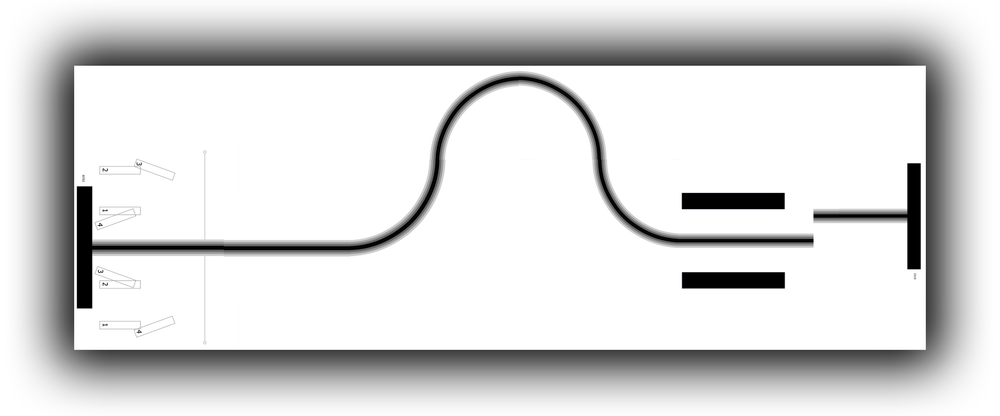
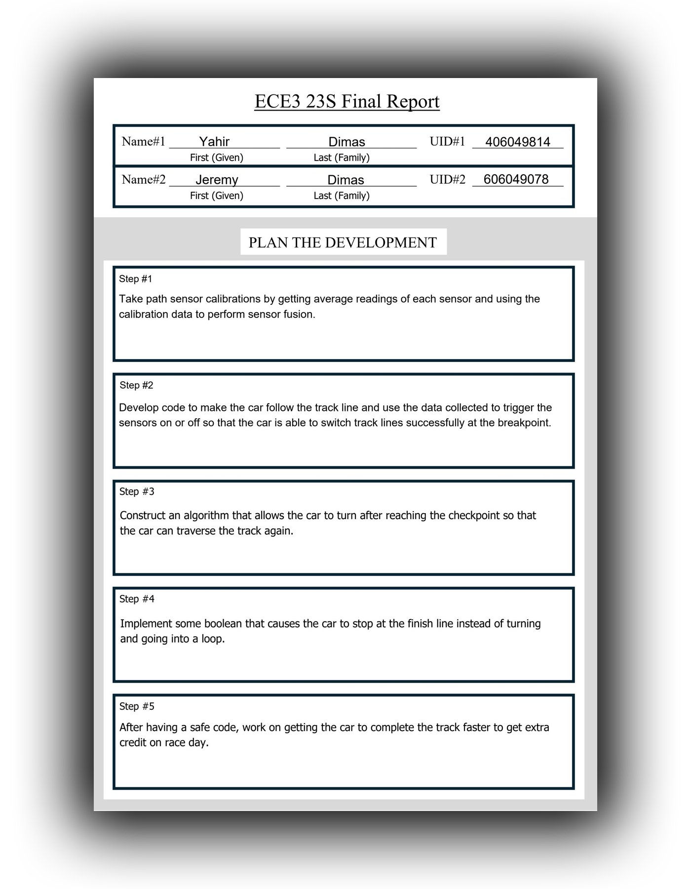
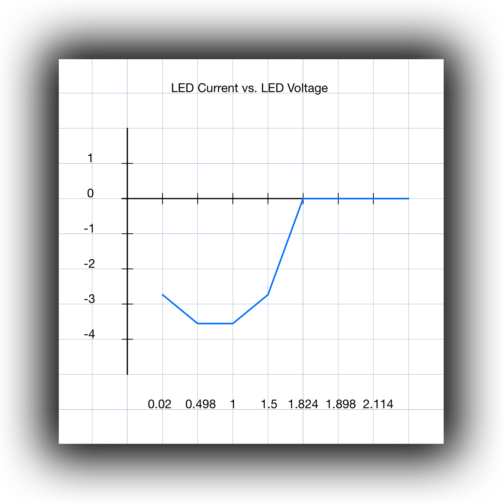
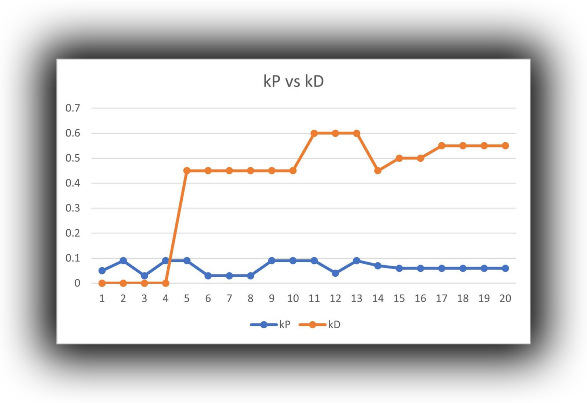
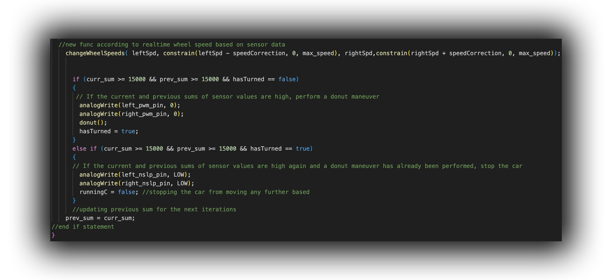

Path Following Car
Objective
The objective of this class project is to program a TI-RSLK (car) using a micro-controller (Arduino) encoded using C++ syntax to follow and complete a path regardless of time or speed from a start position of the instructor's choice, paths 1-4, however extra-credit will be given for those who can get the car to complete the path under 20 seconds.
Skills
Throughout the course of the project, valuable engineering skills and techniques were learned such as using an oscilliscope to measure voltage readings, analyzing infrared waves and readings, basics of circuit analysis and working with a breadboard, learning how to code in Arduino (C++), how to document and plan accordingly, working under a deadline, and cooperating with a partner.
Race Track
Process

We had 5 weeks to develop a successful-working car
so my partner and I made weekly objectives as we only had 4 hours a
week of given lab-time to work on the car (excluding outside lab hours). We recorded our objectives and data in a lab notebook so we may build
upon our trial-and-error success rate. Our 5 weekly goals were
as followed: Week 1: Record path sensor calibrations by analyzing average
sensor levels and using the calibration data to perform sensor fusion; Week 2: Develop code to make the car follow the track line and use the
data collected to trigger the sensors on or off so that the car is able to switch track lines successfully at the breakpoint; Week 3: Construct
an algorithm that allows the car to turn after reaching the breakpoint so that the car can traverse the track again; Week 4: Implement some
boolean that causes the car to stop at the finish line instead of turning and going into a loop; Week 5: After developing a safe code, work
on getting the car to complete the track faster and receive extra credit on race day.

We measured the voltage readings of the TI-RSLK's battery so we could accomodate for the infrared readings from the
8 phototransistors
underneath the TI-RSLK. We analyzed the readings from the phototransistors on a software program called
Waveforms. Waveforms displayed a chart
with real-time-data of the change in lighting. This information is useful because this allowed us to know how the car would read the path. Since the
car would follow a black line, we programmed the 2 centered phototransistors of the car to move forward with a reading of 2500 (2500 being the highest
level of darkness) to follow the path.

While trying to get the car to move forward in a straight line, we noticed the car would oscillate on the path and then steer off-course.
Through trial and error, my partner and I noticed that by increasing the derivative controller "Kd" (stability) and decreasing the
proportional controller "Kp" (base speed/power) of the car allowed the car to move in a straight line successfully. After getting the
car to successfully follow a straight line, we had to figure out how the car would realign itself at the breakpoint and continue moving.
We noticed at first that the car would read part of the track before steering off-course at the breakpoint. With this in mind, we tested
turning off the 4 phototransistors on the right and turning on the 4 transistors on the left of the car. With this attempt, the car was able
to successfully realign itself at the breakpoint and continue following the track up to the turning point (straight-black line).

Once we got the car to complete the path, we looked towards
how we can optimize the car's performance on the track. We created an encoder count that would allow the car to move at a high speed on
straightaways, slow down when approaching and moving along the turn, then speed up leaving the turn. We thought we were finished until
we came across an unexpected error in our car. We tested our car outdoors and our car failed to complete the track. After analyzing our
readings, we noticed the car was failing due to the change of infrared lighting outdoors compared to indoors. We readjusted our parameters
and made the accomodation for both indoors and outdoors. On race day, we let our car run without the encoder and the car finished at 32
seconds. With the encoder, the car finished the track under 19 seconds, overall completing the track successfully and obtaining the extra credit.